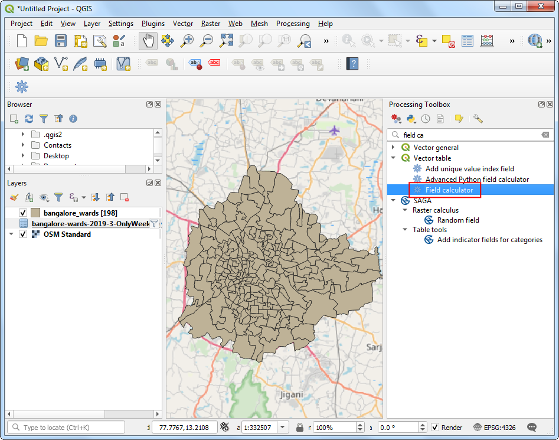
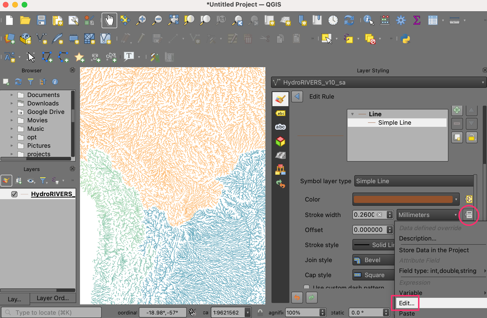
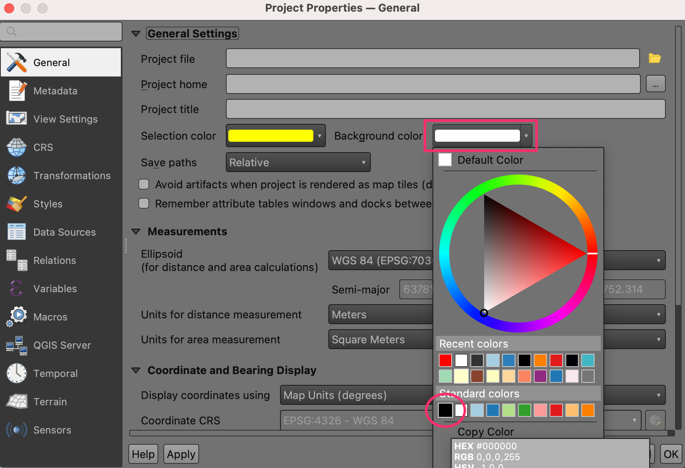
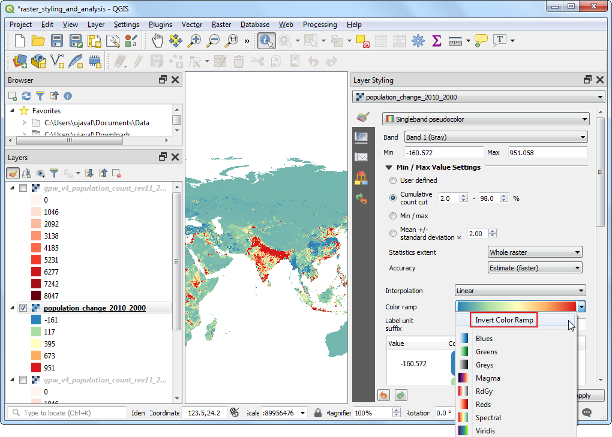

Travel Time Analysis with Uber Movement (QGIS3)¶
Atenționare
Uber Movement data has been discontinued [view announcement]. You can still follow the tutorial using the archive data provided in the tutorial and learn the technique of travel time analysis using QGIS.
Uber Movement shares anonymized and aggregated travel time data for many cities across the world. Uber Movement’s Travel Times product is a public dataset measuring zone-to-zone travel across a city. These times are based on actual Uber rides and is an accurate representation of congestion and traffic patterns in the city. This is a large openly accessible dataset aggregated from millions of actual cab rides. This tutorial shows the techniques to work use such aggregated traffic datasets for doing travel time analysis in QGIS.
Overview of the task¶
We will use an aggregated traffic dataset for the city of Bangalore, India to find travel times to a chosen location in the city. We will also create an Isochrone Map for a 30-min travel time threshold.
Alte competențe pe care le veți dobândi¶
Load a GeoJSON file in QGIS
Obținerea datelor¶
We will download the Travel Times dataset for the city of Bangalore, India.
Go to the Uber Movement site and click on the Cities.

Search for
Banglore.

Click on Download data.

In the
Download datapopup, switch to GEO BOUNDARIES. It will contain the Banglore wards GeoJSON file. Accept the license information and click onBANGLORE_WARDS.JSONto download.

Then switch to
ALL DATA. This data is available from 2016 to 2020, and each year is divided into 4 quarters. We will download the data for2019 Quarter 3. Select it and click theTravel Times by Hour of Day (Weekdays Only). This file will contain all anonymous information about the weekday uber travel in Bangalore from July to September 2019.

Pentru comoditate, puteți descărca o copie a seturilor de date direct de la adresele de mai jos:
bangalore-wards-2019-3-OnlyWeekdays-HourlyAggregate.csv
Sursa datelor: [UBER]
Procedura¶
Locate the
bangalore_wards.jsonfile in the Browser panel and drag it to the canvas. Next, we will load a basemap layer from OpenStreetMap. We will use the QuickMapServices plugin to access the basemap. Once installed, go to . A basemap tile layer from OpenStreetMap will be added to the project. Next, click the Open Data Source Manager button.

Switch to the Delimited Text tab. Browse to the
bangalore-wards-2019-3-OnlyWeekdays-HourlyAggregate.csvfile and select it. Since this CSV file is just tabular data, select No geometry (attribute only table) option and click Add.

The
bangalore-wards-2019-3-OnlyWeekdays-HourlyAggregatelayer will be added to the Layers panel. This layer contains anonymized and aggregated trip location data between different zones of the city. Each row of the table contains columns for source zone (sourceid), destination zone (dstid), hour of the day (hod) and average travel time aggregated from all trips between these zone at that hour (mean_travel_time). You can learn more about this dataset in the Movement: Travel Times Calculation Methodology (pdf). Before moving forward, let’s check how many data records are present in the layer. Right-click thebangalore-wards-2019-3-OnlyWeekdays-HourlyAggregatelayer and select Show Feature Count. The total rows from the table will be displayed next to it. This is a fairly large table but we don’t need all the data rows for our analysis. We will now identify our target location and filter this table to data records for it.

We want to calculate all areas that are accessible within 30 minutes from a specific location. Using the OSM Standard basemap, you can find the location of interest. Then select the
bangalore_wardslayer, use the Identify tool and click on it. The results will show the attributes of the zone containing the location. For the purpose of this tutorial, let’s assume our target location is within the JP Nagar zone with the MOVEMENT_ID 193.

We can filter the travel time records to just those which have this zone as the destination. We can also restrict our analysis to the peak morning commute hour of 9am - 10am. Right-click the
bangalore-wards-2019-3-OnlyWeekdays-HourlyAggregatelayer and select Filter.

Enter the following filter expression and click OK.
"dstid" = 193 AND "hod" = 9
Back in the main QGIS window, you will see that the number of records in the filtered table are now down to just 197. Since there are a total of 198 zones in the city, we have records of travel times between the 1 destination ward and 197 source zones. Open the attribute table of both the layers using the Open Attribute Table button in the Attributes toolbar.

Now we have the shapes of the ward in the layer
bangalore_wardsand tabular information in the layerbangalore-wards-2019-3-OnlyWeekdays-HourlyAggregate. We can join the attribute information to the shapes using a common attribute. Here theMOVEMENT_IDcolumn from thebangalore_wardslayer andsourceidcolumn from thebangalore-wards-2019-3-OnlyWeekdays-HourlyAggregateare unique ward identifiers that can be joined. This operation is called a Table Join.

Before we can join these two layers, we must ensure that the values in both columns match exactly. Thought they appear the same, they are of different type. Since GeoJSON format has no way of specifying property types, all values are assumed to be of the type String - i.e. Text. But when we import a CSV to QGIS, by default, QGIS tries to determines the types of the columns based on the values and assign appropriate field type. For the CSV file, the data type for the column
sourceidwas assigned as Integer. So we need to convert the column from the GeoJSON to an Integer type as well. Go to . Double-click to launch it.

Choose
bangalore_wardsas the Input Layer. Name the Field Name asjoinfieldand select the Result field type asInteger. EnterMOVEMENT_IDas the Expression. Click the … button next to the Calculated and select Save to File… then enter the name of the output file asbangalore_wards_fixed.gpkg. Click Run. Close the field calculator.

A new layer
bangalore_wards_fixedwill be added to the Layers panel. Now we are ready to perform the join. Go to . Double-click to launch it.

Select
bangalore_wards_fixedas the Input layer andjoinfieldas the Table field. Selectbangalore-wards-2019-3-OnlyWeekdays-HourlyAggregateas the Input layer 2 andsourceidas the Table field 2. Name the Joined layer asuber_travel_times.gpkgand click Run.

A new layer
uber_travel_timeswill be added to the Layers panel. Let’s style it to visualize the result of the join. Click Open the Layer Styling Panel. Select theGraduatedrenderer andmean_travel_timeas the Value. Select a color ramp and click Classify. You will see the map showing increasing travel times further you go from the destination.

But we are looking to analyze and extract areas that are within 30 minutes of travel time, so we need to do some more processing. Switch the styling back to the Single symbol renderer. Right-click the
uber_travel_timeslayer and select Filter.

Enter the following expression to select all zones within 1800 seconds (30 minutes) of mean travel time. We also need to include our destination zone which will have 0 travel time.
"mean_travel_time" <= 1800 OR "MOVEMENT_ID" = 193
The layer will now show the cluster of polygons that constitute the area of interest. We will merge all of them to a single polygon now. Go to . Double-click to launch it.

Select
uber_travel_timesas the Input layer. Name the Dissolved layer as30min_isochrone.gpkg. Click Run.

A new layer
30min_isochronewill be added to the Layers panel showing the result of our analysis.

If you want to give feedback or share your experience with this tutorial, please comment below. (requires GitHub account)